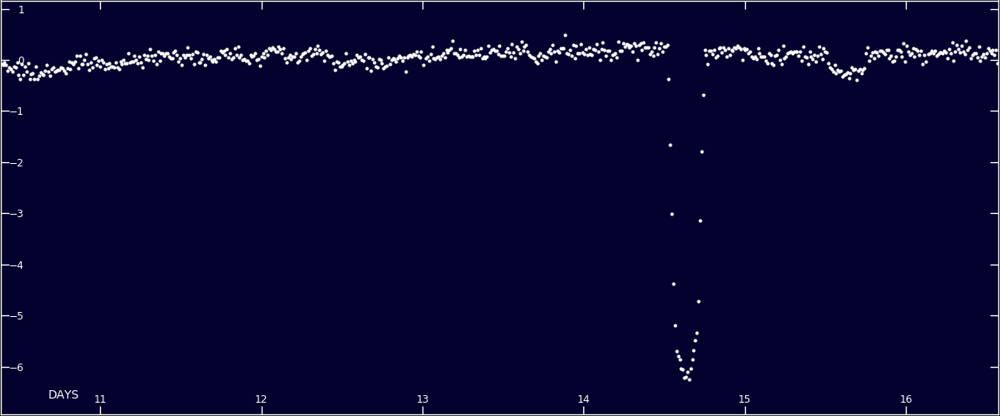

TOI-1338: TESS’ First Transiting Circumbinary Planet
TOI-1338 b is the planet that I helped to discover in the summer before my senior year of high school while I was working with Dr. Veselin Kostov at NASA Goddard Space Flight Center. I was searching through targets identified as Eclipsing Binaries on the citizen science project Planet Hunters TESS when I noticed an interesting target.
Below is the original lightcurve that I saw– the dip between day-14 and day-15 is the primary eclipse (i.e. when the smaller star blocks the light of the bigger star) and the smaller dip between days 15 and 16 is the planetary transit.

Image Credit Planet Hunters TESSThere was a lot of news coverage surrounding this discovery, the following are a couple of my favorites:
- Discovery of TESS Mission’s First Circumbinary Planet by Dr. Ravi Kopparapu – My advisor from the previous summer and secondary advisor that summer
- A teenager discovered a new planet on the third day of his NASA internship by the Washington Post
Recommended citation: Veselin B. Kostov et al 2020 AJ 159 253
Citation
Veselin B. Kostov et al 2020 AJ 159 253